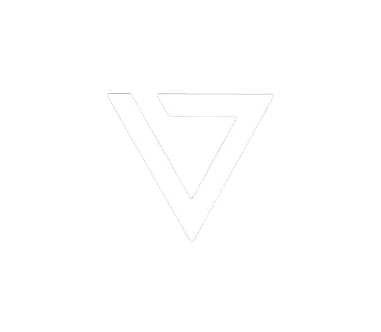

Biserica Vertical
Biserica aici, acum
Tineret UNITED
Acasă
Despre
Program
Locație
Contact
Bine ai venit!
Ne bucurăm că ești aici. Descoperă comunitatea noastră — Biserica aici, acum.
Vezi programul →